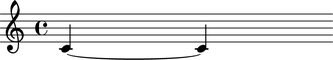

The Abjad _TieInterface class
The Abjad _TieInterface class manages note, rest and chord ties.
Public interface
Attributes
Ties are managed via the _TieInterface interface. All Leaves and only Leaves posess this interface.
abjad> note = Note(0, (1, 4)) abjad> note.tie _TieInterface
Usage
Ties can be set in two ways:
- By "wrapping" an Abjad Component (be it a Container or a Leaf) with the
Tiespanner (Refer to the Spanners section). - By setting the tie attribute of a
_Leafinstance to True.
abjad> note1 = Note(0, (1, 4)) abjad> note2 = Note(0, (1, 4)) abjad> note1.tie = True abjad> voice = Voice([note1, note2]) abjad> show(voice)
To unset the tie attribute simply set it to False or None.
abjad> note1.tie = False
Attributes
tiedtailhead
The tied attribute indicates whether the Leaf is being tied to by the Leaf immediately preceding it.
abjad> note1 = Note(0, (1, 4)) abjad> note2 = Note(0, (1, 4)) abjad> voice = Voice([note1, note2]) abjad> note1.tie = True abjad> note1.tie.tied False abjad> note2.tie.tied True
The tail attribute indicates whether the Leaf is tied from the previous Leaf and it itself does not have a tie set.
abjad> note1 = Note(0, (1, 4)) abjad> note2 = Note(0, (1, 4)) abjad> note3 = Note(0, (1, 4)) abjad> voice = Voice([note1, note2, note3]) abjad> note1.tie = True abjad> note2.tie = True abjad> note1.tie.tail False abjad> note2.tie.tail False abjad> note3.tie.tail True
_Leaf.tie.tail is also True when the Leaf being queried is the last in a Tie spanner.
The head attribute is analogous but opposite to tail. It is true iff the Leaf has a tie set and is not tied from the previous Leaf.
abjad> note1 = Note(0, (1, 4)) abjad> note2 = Note(0, (1, 4)) abjad> note3 = Note(0, (1, 4)) abjad> voice = Voice([note1, note2, note3]) abjad> note1.tie = True abjad> note2.tie = True abjad> note1.tie.head True abjad> note2.tie.head False abjad> note3.tie.head False
To do
It might be usefull to have these attributes in _GlissandoInterface as well.